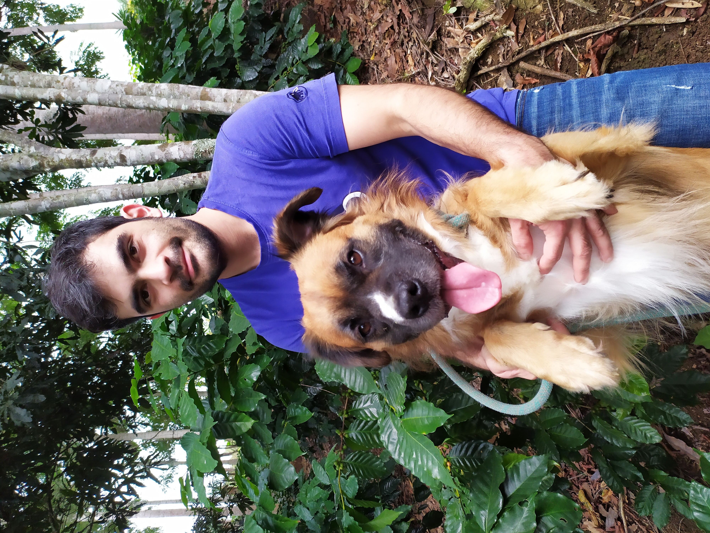

Product Development Engineer
based on Milan, Italy

Adaptability would be a word that defines me the best. I am a Design Technologist who has been focused on computational design with a broad interest in research, emerging technologies, and humane innovation.
I was born in Huatusco, Veracruz, Mexico a town dedicated to coffee production. Raised within a hard-working and innovative family, living, and learning in symbiosis with nature and always looking for ways to expand my capabilities.
I moved to Mexico City for a five years program in Mechatronics Engineering in the UNAM, path that took me into a journey of innovation, design, and global experiences. At the end of my bachelor's, I had the opportunity to be part of the Stanford Innovation Course ME310 where I Contribute to the design of the polar roller(project below).
After, I got an opportunity inside Ford Motor Company where I could start using my engineering knowledge and gathering experience in the product development process of a global company. I participated in a large number of platforms(Fusion, Mustang, Scape, Transit, and Navigator) and projects, where at the end of my time here I could come up with 4 patents, successful methodologies implementation, and strong knowledge about FEA, manufacturing and 3D modeling.
In 2017 I decided to look for my master’s degree at Politecnico di Milano, to fulfill my engineering knowledge and merge with Italian design. On this master's, I got the opportunity to work with multidisciplinary and international teams. I follow the path of interaction design that gives you the D&E master, but at the same time, I could keep developing my engineering skills, especially with FEA. Whereat the end of my scholar path I took the last challenge when I got accepted to have one-year research stage at MIT Design Lab. This opportunity brought me to the heart of Cambridge, where I work with global companies, amazing and genius people, and could improve my skills in design, research, and emerging technologies.
Nowadays, I’m looking for career and collaboration opportunities to bring further all this year of amazing experiences that the world of Design opened up to me.